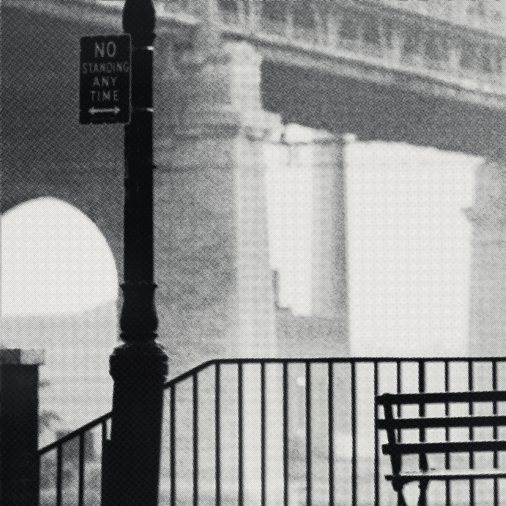

How to order
KESSLER & LOWE
Telephone us by Wednesday for a weekend party, and by five o’clock the day before for brunch. We deliver from the Battery to 96th Street, early, late and in thunderstorms.
Parties of twelve or more. A deposit of one third holds your date.
Staff and rentals
KESSLER & LOWE

Waiter, for the evening
35.00
Bartender, for the evening
40.00
Pianist, for the evening
60.00
Our pianist takes requests. Gershwin a specialty.
Glasses, the dozen
3.00
Linen, per table
4.00
Folding chairs, each
.75
We also do
KESSLER & LOWE
Gallery openings and museum benefits
Book parties for publishers
Rehearsal lunches for television
Picnic hampers for the park
Carriage and rowboat not included.
KESSLER & LOWE
EAST 58TH STREET, NEW YORK, N.Y. 10022
(212) 555-0179
TAX AND GRATUITY EXTRA

CATERERSEAST 58TH STREET
KESSLER & LOWE
We adore New York City.
Cocktail parties, brunches, suppers and desserts, to your door.
PRICE LISTSPRING 1979